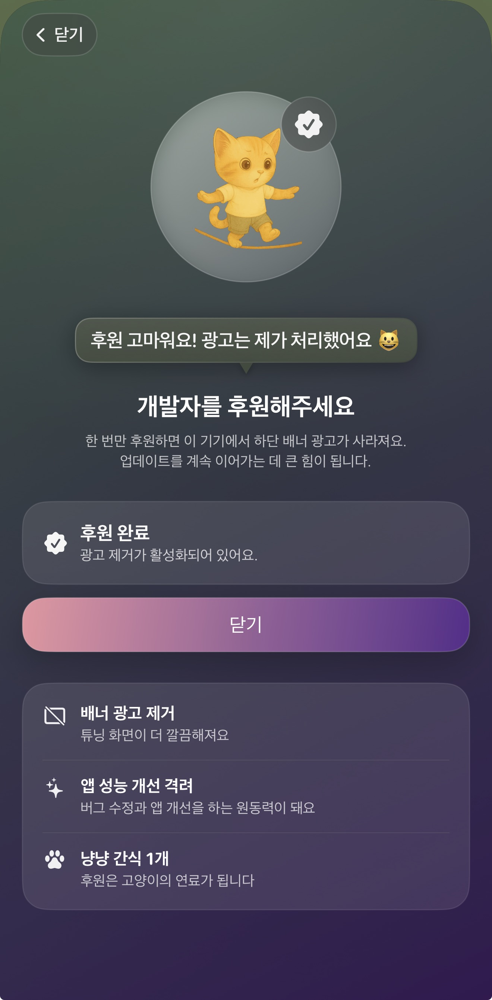
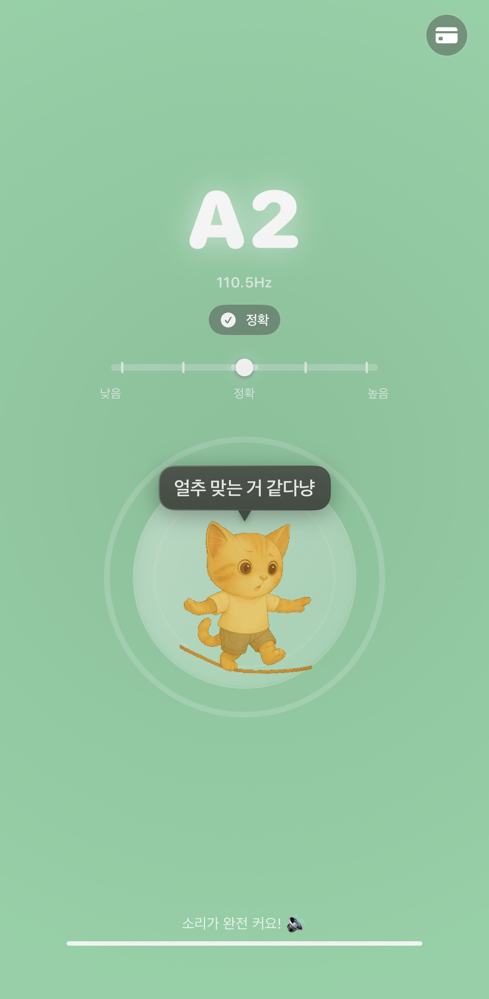

칙칙한 튜너는 가라! 귀여운 고양이와 함께 하는 튜닝 경험
냥냥 튜너는 초보자부터 전문가까지 누구나 쉽게 사용할 수 있는 악기 튜닝 도구입니다. 기타뿐 아니라 베이스등 범용적으로 사용 가능합니다. 칙칙한 튜닝 시간을 귀여운 고양이와 함께 즐겁게 바꿔보세요!
Music Utility
실 사용 예시
고양이 감성을 담은 튜닝 화면을 직접 확인하세요
스토어에 올라간 실제 냥냥 튜너 화면을 소개 아래에 바로 보여드려요. 익숙한 조작법에 귀여운 고양이 일러스트를 더해 튜닝 시간을 조금 더 즐겁게 만들었습니다.


iOS App
아이폰에서 바로 냥냥 튜너로 조율 시작
App Store에서 냥냥 튜너를 설치하고, 언제 어디서든 고양이와 함께 귀엽게 튜닝하세요.